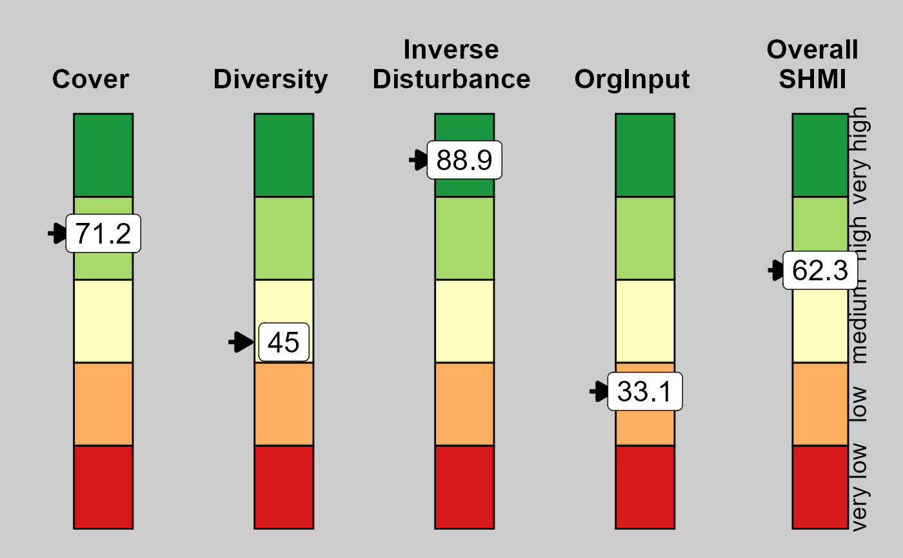

Plot gauges of SHMI and its sub-indices for one management unit
Source:R/plot_shmi_gauge.R
plot_shmi_gauge.RdDraws five vertical gauges, for Cover, Diversity, Inverse Disturbance, Organic Inputs, and overall SHMI. Each gauge shows the 0-100 scale in five bands ("very low" to "very high") with a pointer at the unit's score.
Value
Draws the plot and invisibly returns the arranged grob from
gridExtra::grid.arrange().
Examples
scores <- data.frame(MGT_combo = "field_1", SHMI = 62.3, Cover = 71.2,
Diversity = 45.0, InvDist = 88.9, OrgInput = 33.1)
plot_shmi_gauge(scores)
